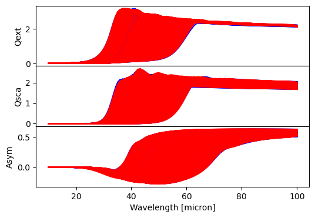

Installation and Quick Start
Installation
To install MieNet, clone the git repository and install it:
[ ]:
git clone https://github.com/MieNet-org/mienet.git
cd mienet
pip install -e .
To run the AI models, you need to download the pre-trained models from Zenodo:
[ ]:
from mienet import MieNet
# set up mienet class
# to choose where the data are saved set default_data_location = 'path/to/folder/'
ma = MieNet(default_data_location = None)
# download data
ma.download_models()
Quick Start
To calculate the opacities of heterogenous particles, all you have to provide are the wavelengths, radii, and the volume mixing ratios (VMRs) of the cloud particles. One VMR per radius is expected
[5]:
import numpy as np
from mienet import MieNet
# example values
wavelengths = np.logspace(1, 2, 100) # wavelength range in micron
radii = np.logspace(-2, 2, 100) # particle size in micron
vmrs = {
'SiO2': 0.8 * np.ones_like(radii),
'Fe': 0.2 * np.ones_like(radii),
}
# set up mienet class
ma = MieNet()
# calculate opacities using the ai model
qext_ai, qsca_ai, asym_ai = ma.ai_efficiencies(wavelengths, radii, vmrs)
# calcualte opaciteis using full calculations
qext_full, qsca_full, asym_full = ma.efficiencies(wavelengths, radii, vmrs)
WARNING:tensorflow:5 out of the last 315 calls to <function TensorFlowTrainer.make_predict_function.<locals>.one_step_on_data_distributed at 0x17ebc16c0> triggered tf.function retracing. Tracing is expensive and the excessive number of tracings could be due to (1) creating @tf.function repeatedly in a loop, (2) passing tensors with different shapes, (3) passing Python objects instead of tensors. For (1), please define your @tf.function outside of the loop. For (2), @tf.function has reduce_retracing=True option that can avoid unnecessary retracing. For (3), please refer to https://www.tensorflow.org/guide/function#controlling_retracing and https://www.tensorflow.org/api_docs/python/tf/function for more details.
310/310 ━━━━━━━━━━━━━━━━━━━━ 0s 447us/step
4/4 ━━━━━━━━━━━━━━━━━━━━ 0s 12ms/step
Here a plot of the results:
[6]:
import matplotlib.pyplot as plt
# plot results
fig, ax = plt.subplots(3, 1, figsize=(6,4))
ax[0].plot(wavelengths, qext_ai, color='blue', label='AI')
ax[0].plot(wavelengths, qext_full, color='red', label='Full')
ax[1].plot(wavelengths, qsca_ai, color='blue', label='AI')
ax[1].plot(wavelengths, qsca_full, color='red', label='Full')
ax[2].plot(wavelengths, asym_ai, color='blue', label='AI')
ax[2].plot(wavelengths, asym_full, color='red', label='Full')
# make a pretty plot
plt.subplots_adjust(hspace=0)
ax[0].set_ylabel('Qext')
ax[1].set_ylabel('Qsca')
ax[2].set_ylabel('Asym')
ax[2].set_xlabel('Wavelength [micron]')
plt.show()

[ ]: